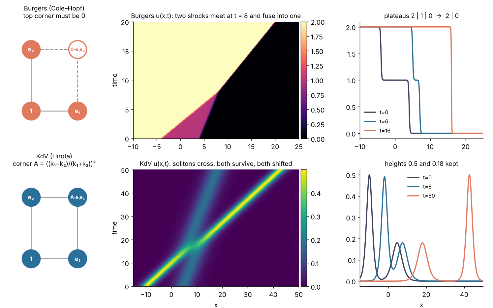
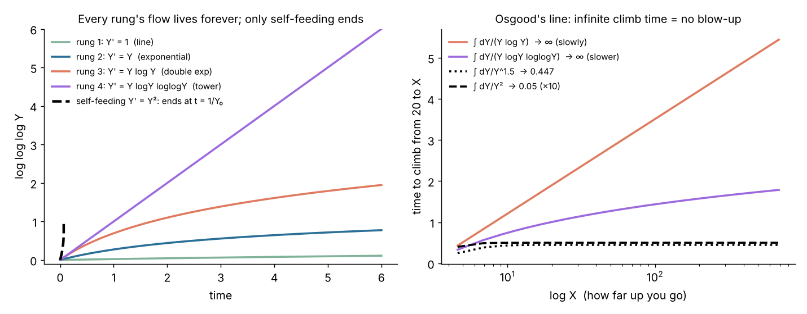
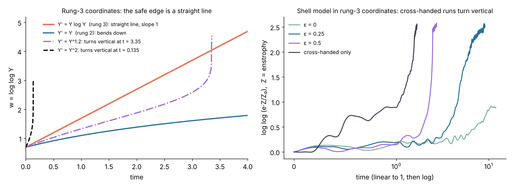
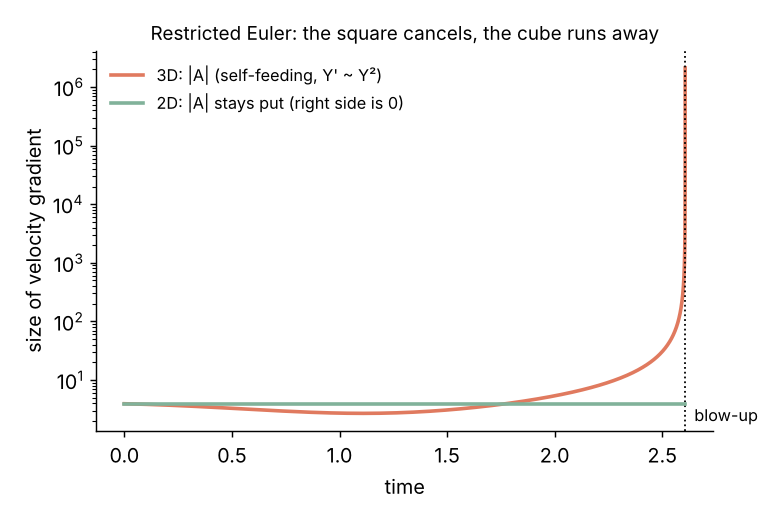
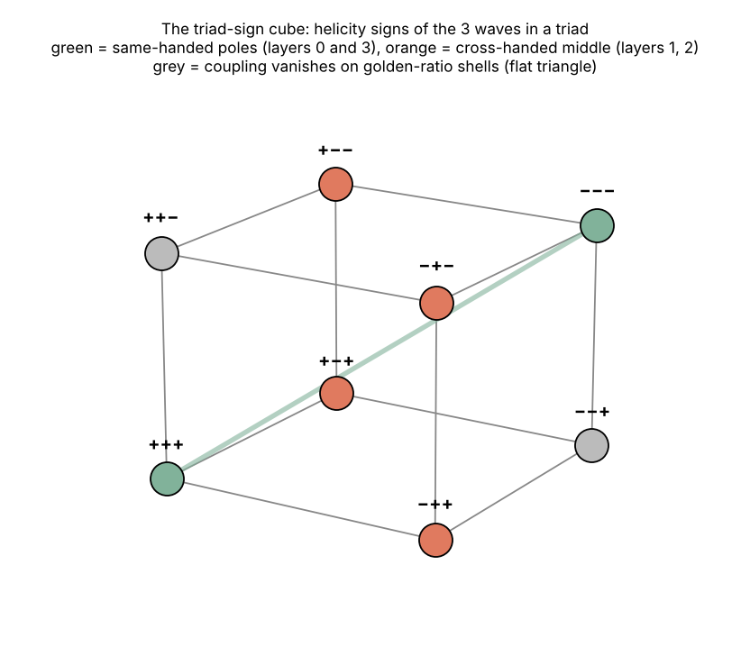
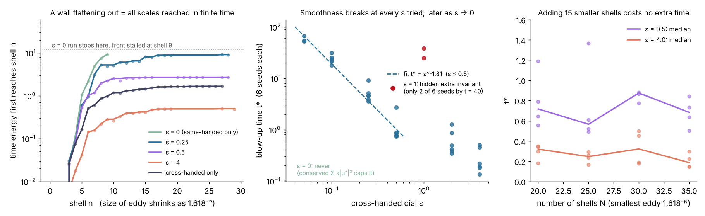
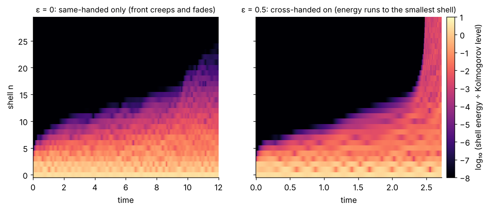
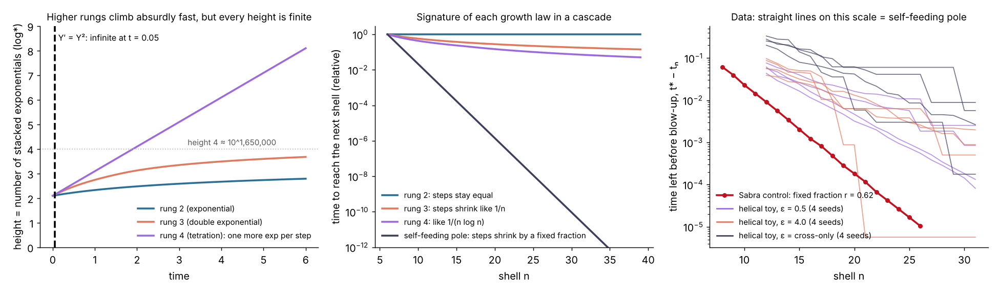

Each rung of Fused Hyperoperation Algebra gives the fluid equations one honest tool and hits one wall. The circle operation ∘₁ (called mult-add before 1.0) is the log that flattens all motion without spin. The fused exponent turns out to be exactly the double-exponential growth law that 2D flow is proved to obey, so in its coordinates the edge of safety is a straight line.
3D vortex stretching is a different animal: a self-feeding square that leaves the ladder altogether. In a helical shell-model toy, switching on any amount of right-meets-left coupling broke smoothness in finite time, later as the dial went down (blow-up time roughly ε−1.8). With the coupling off, nothing broke, and that part can be proved.
Climbing higher doesn't help: tetration and pentation outgrow everything but never become infinite, so no rung matches stretching.
Nothing here solves the Millennium problem; this is how it looks through your lens. Every formula was checked in Python, the algebra was proved in core Lean, and the known/new line is near the end.
I used one rule for every rung: take the ordinary hyperoperation and look at it through x ↦ 1 + x. So rung n is a ⊛n b = Hn(1+a, 1+b) − 1. On this numbering your "fused add" (the circle operation) is rung 2, because it is multiplication seen through the shift; rung 1, a + b + 1, is plain addition with the zero moved.
| Rung | Operation | What straightens it | Flow from a fixed step |
|---|---|---|---|
| 1 | a + b + 1 | nothing needed | Y′ = λ (a line) |
| 2 | a + b + ab = (1+a)(1+b) − 1 | one log: L(a) = log(1+a) | Y′ = λY (exponential) |
| 3 | (1+a)1+b − 1 | two logs: LL(a ⊛ b) = LL(a) + L(b) | Y′ = λ Y log Y (double exponential) |
| 4 | (1+a)↑↑(1+b) − 1 | an Abel function (slowly) | Y′ ≈ Y log Y loglog Y |
Each rung is the rung below repeated: the circle operation repeats shifted add, the fused exponent repeats the circle operation, and fused tetration repeats the fused exponent on the exponent side. All three were proved in Lean.
19 of 19 numeric checks pass (algebra_checks.py).
The circle-operation log is Cole–Hopf: write u = −2ν ∂x log φ and Burgers becomes the heat equation for φ. Two waves sit on a square of terms: 1, e1, e2 and the top corner e1e2. For Burgers that top corner must be empty. Each term solves the heat equation only if its rate equals ν·slope², and the corner misses by exactly −2ν a1a2 (proved in Lean). With the corner empty, the two shocks meet at t = 8 and fuse into one, and the middle plateau is gone. That is information lost, the thing you dislike about 0 × 4 = 0.
KdV is the same square with the corner filled by Hirota's weight A = ((k1−k2)/(k1+k2))². Then both solitons survive the collision with their heights kept, each shifted by log A. The PDE residual is 6×10−4 with the right corner against 0.31 with the plain circle operation (corner 1).

For Navier–Stokes, the same log flattens the gradient ("landscape") part of the flow, which the pressure soaks up. What is left is spin, as in the earlier Navier–Stokes write-up. Rung 2 cannot touch spin, because vorticity is not a gradient of anything.
Take a rung and keep applying it with the same small step. Rung 2 gives exponential growth, Y′ = λY. Rung 3 applied on the base side, Y → Yc, gives Y(t) = Y0ct, which is exactly the flow of Y′ = λ Y log Y (checked numerically; the discrete version, Yn + 1 = (a+1)(c+1)n, is proved in Lean). By the chain rule, each rung's speed is the one below with one more log: Fn+1(Y) = Y · Fn(log Y).
Now the fluid. In 2D the size of the vorticity gradient obeys a log-type inequality (Beale–Kato–Majda style) that gives exactly Y′ ≤ C Y log Y. That is the rung-3 flow, so 2D flow can grow at most double-exponentially (Wolibner, Yudovich), and Kiselev and Šverák showed in 2014 that double-exponential growth really happens. So 2D sits on rung 3: it grows as fast as the fused exponent, no faster, and never breaks.


3D is different because of stretching: the velocity gradient feeds on itself. The restricted Euler model, dA/dt = −A² + (tr A²/d) I, shows it in one line. In 2D its right side is identically zero, so the square cancels. In 3D it blows up with log|A| against log(T − t) slope −0.99, the Riccati pole of Y′ = Y². The Beale–Kato–Majda criterion turns the Millennium question into this picture: does 3D vorticity stay at or under the rung-3 line, or does stretching self-feed past Osgood's line?

This picks up the open question from the earlier write-up. Every interaction in a fluid involves three waves, and each wave spins right (+) or left (−). The eight sign choices are the corners of a cube, with layers 1, 3, 3, 1 by number of minus signs (Pascal again; proved in Lean). The two same-handed corners, +++ and −−−, are layers 0 and 3. The six cross-handed corners are the middle layers.

A helical shell model: shells kn = 1.618n, a right and a left amplitude per shell, interaction weights in Waleffe's helical-triad form (spp − sqq)(skk + spp + sqq). It's built in the spirit of Benzi, Biferale and coauthors' 1996 models, not identical to them. Every corner conserves energy and helicity (proved in Lean; in the runs they drift by under 10−7). The dial ε multiplies the six cross-handed corners. With no viscosity, a blow-up shows up as energy reaching every smaller shell in finite time.
Control: the classic Sabra model with b = −0.5 shows the signature cleanly (all shells reached by t = 0.6188), and the 2D-like b = −1.5 does not.


Short answer: no rung matches vortex stretching, however high. Tetration and pentation grow unimaginably fast but never become infinite, while stretching becomes infinite in finite time. What blow-up does match is plain rung-2 growth on a clock that counts the log of time left. That is the known self-similar picture, so this part renames known growth.
Defined the same way: a ⊛4 b = (1+a)↑↑(1+b) − 1 and a ⊛5 b = (1+a)↑↑↑(1+b) − 1, for whole-number b. Both keep 0 as a right identity and as a left absorber. Each is the rung below repeated on the exponent side (proved in Lean). Neither is associative nor commutative: (1 ⊛4 1) ⊛4 1 = 255 but 1 ⊛4 (1 ⊛4 1) = 65 535.
The clean laws stop at rung 3. Distributivity over the circle operation, the tower law and the sum law all fail at rung 4, each with a small counterexample checked in Lean. Rung 2 was straightened by one log and rung 3 by two. No fixed stack of logs straightens rung 4: taking logs of a tower just leaves a shorter tower. It needs the super-logarithm (log*), which for in-between heights isn't even uniquely defined. So above rung 3 there is no algebra left to work with, only speed.
Repeating rung 4 with a fixed step stacks one more exponential per step. Its speed is Y · log Y · loglog Y ⋯, and the time to climb to height X is log* X. That never runs out, so it is still on the safe side of Osgood's line, and the same holds for pentation and every rung above. A self-feeding pole is different in kind: Y′ = Y² reaches infinity at a fixed time.
The two leave different fingerprints in a cascade. Under a pole, each smaller shell takes a fixed fraction of the time the last one took. Under rung 3 or rung 4 growth, the steps shrink only like 1/n or 1/(n log n), so the ratio creeps toward 1.

15 of 15 checks pass (higher_rungs.py); signature fits in stretching_signature.py.
| Piece | Status | Source |
|---|---|---|
| The circle operation = shifted multiplication, linearized by log(1+x) | known | multiplicative formal group law |
| Cole–Hopf (rung 2 on Burgers); the empty corner makes shocks merge | known | Hopf 1950, Cole 1951 |
| Hirota's filled corner for KdV | known | Hirota 1971 |
| Osgood's test; Y log Y as the borderline | known | Osgood 1898 |
| 2D double-exponential bound and its sharpness | known | Wolibner, Yudovich; Kiselev–Šverák 2014 |
| Blow-up criterion via vorticity; restricted Euler pole | known | Beale–Kato–Majda 1984; Vieillefosse 1982 |
| Helical triads; same-handed NS is regular | known | Waleffe 1992; Biferale–Titi 2013 |
| Inviscid shell models blow up | known | Mailybaev 2012 and later |
| Self-similar blow-up is exponential in log(1/(time left)) | known | self-similar variables (Giga–Kohn; Eggers–Fontelos); Luo–Hou 2014, Chen–Hou 2022 |
| Any finite bound on vorticity, at any rung, gives smoothness | known (restated) | Beale–Kato–Majda 1984 |
| Tetration and pentation don't match stretching; the clean laws stop at rung 3 | new to this project | checked here; the algebra facts are elementary |
| Reading the fused exponent's fixed-step flow as the 2D growth law, and the whole ladder as the Osgood sequence | new framing | the pieces are classical; putting them on your ladder is yours |
| Blow-up time against the cross-handed dial, t* ∝ ε−1.8, in this toy | not seen in what I searched | a quick search found the cascade studied with a cross-handed fraction (Sahoo, Alexakis, Biferale 2017), not blow-up time. Toy result only. |
lean/FusedRungs.lean, core Lean 4.37 (mathlib's download is blocked here), compiles clean with no sorry, standard axioms only. Proved, on whole numbers through x ↦ 1 + x:
Not checked by Lean: anything with real numbers, logs or exponentials (the log-log straightening, the Y log Y flow, Osgood's test), the KdV corner, the super-logarithm and growth speeds of rungs 4 and 5, every PDE and ODE, and all simulations. Those rest on the Python checks.
In the project folder math-theory/ns-rungs/: algebra_checks.py, burgers_kdv_cube.py, restricted_euler.py, helical_shell.py, shell_scan.py, sabra_check.py, higher_rungs.py, stretching_signature.py, the scan results (scan_eps.json, scan_N.json, scan_eps005_long.json), the figure scripts, and lean/FusedRungs.lean.